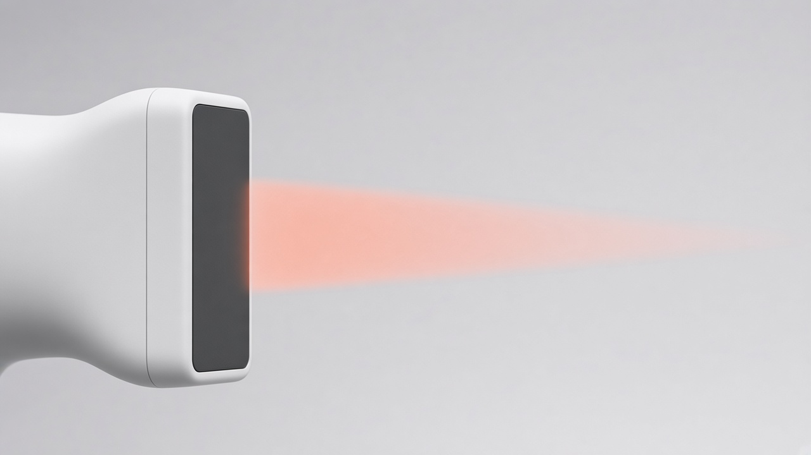
01 / ACQUISITION
找到標準切面
從肩部取像導引開始。
開發說明
切面辨識效能與不同設備的相容性，仍需驗證。
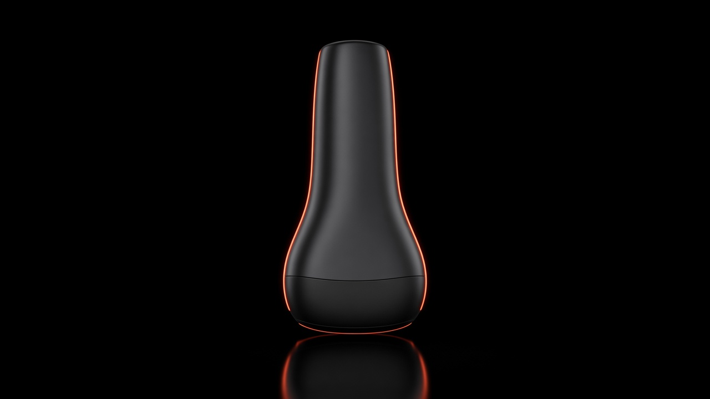
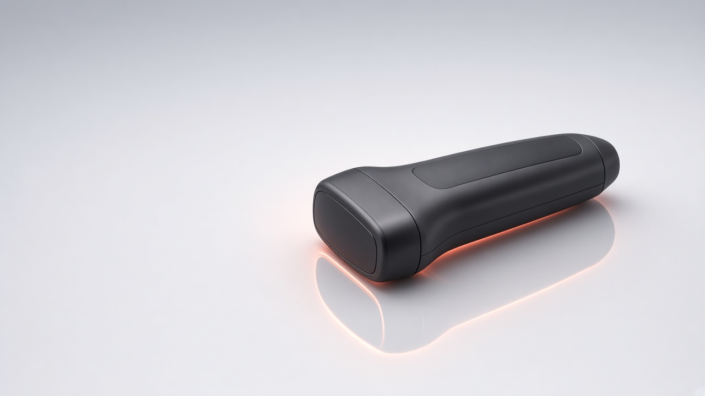
ABOUT SONOMEDIC
從肩部超音波出發的醫療科技新創。
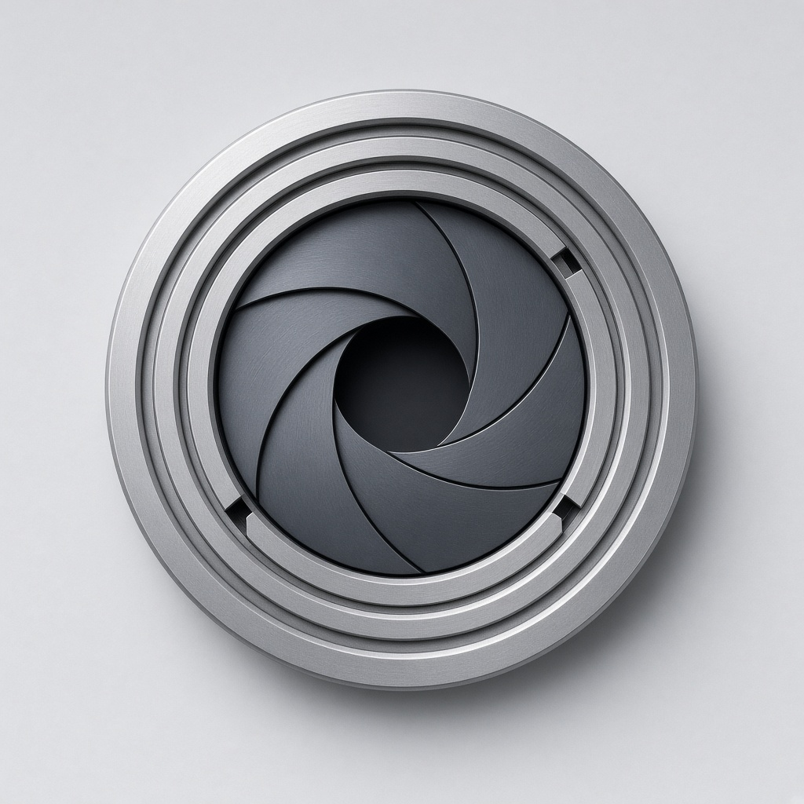
臨床洞察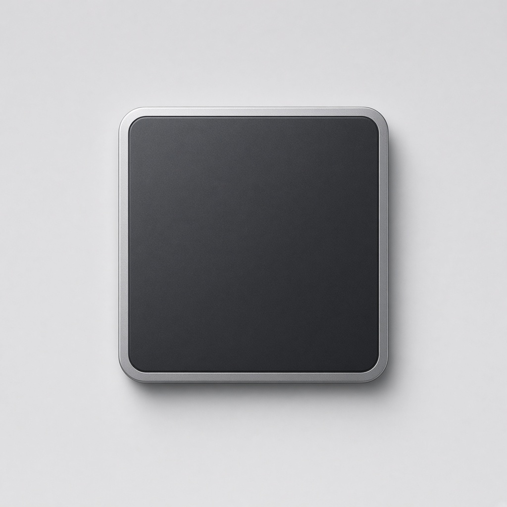
智慧影像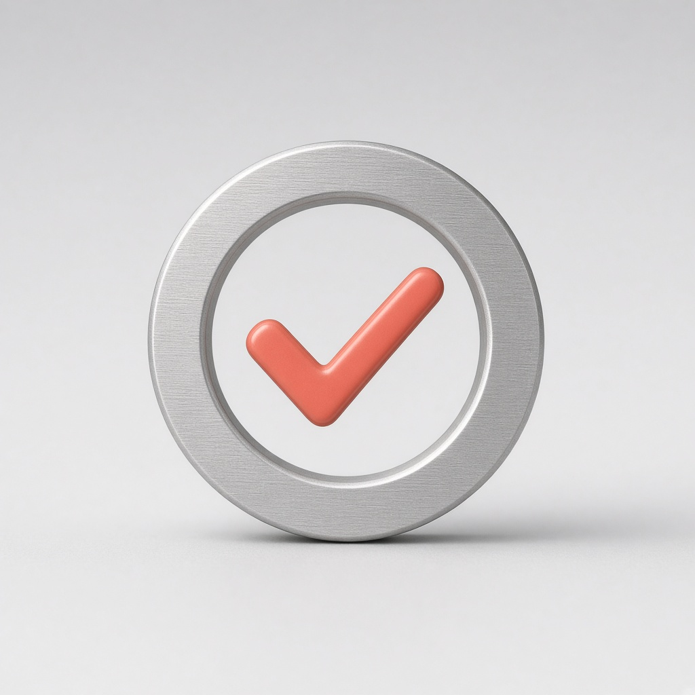
醫師把關THE SOLUTION
點選圖示，探索流程。

01 / ACQUISITION
從肩部取像導引開始。
切面辨識效能與不同設備的相容性，仍需驗證。
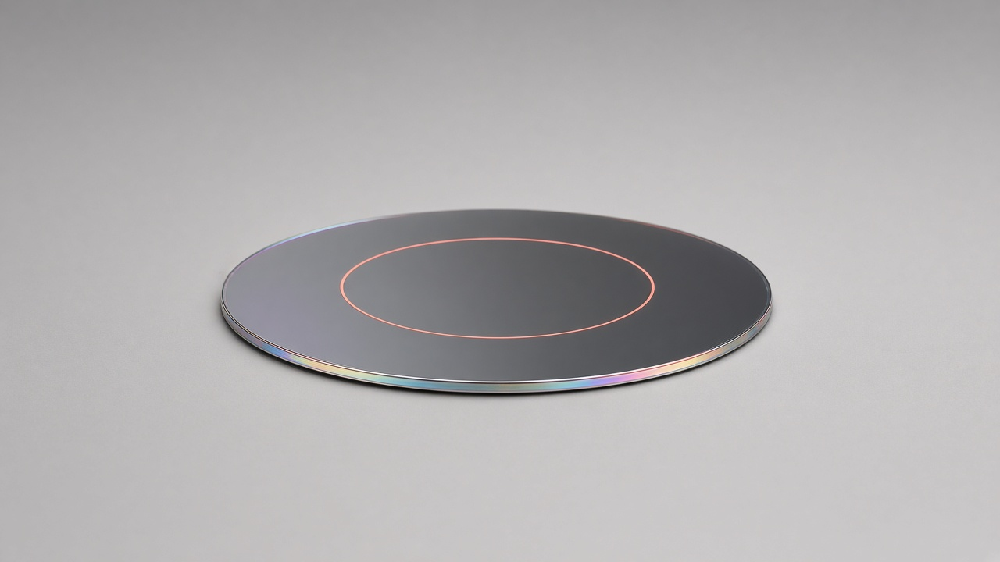
02 / SI ASSESSMENT
讓影像資訊可檢查、可修正。
評估一致性與誤差，需依正式研究設計評估。
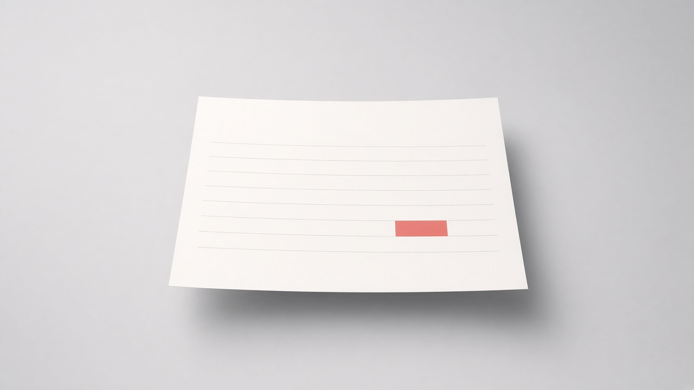
03 / DOCUMENTATION
將觀察與評估整理成紀錄。
報告完整度與時間效益須經驗證；草稿不等同診斷。
04 / CLINICAL REVIEW
審閱、修正，最後簽章。
院內部署與 HIS 串接須依資安、設備及場域需求評估。
概念影像，非產品截圖。技術開發中，不代表醫材核准或已證實臨床效益。
DEVELOPMENT ROADMAP
以分階段驗證，推進產品成熟。
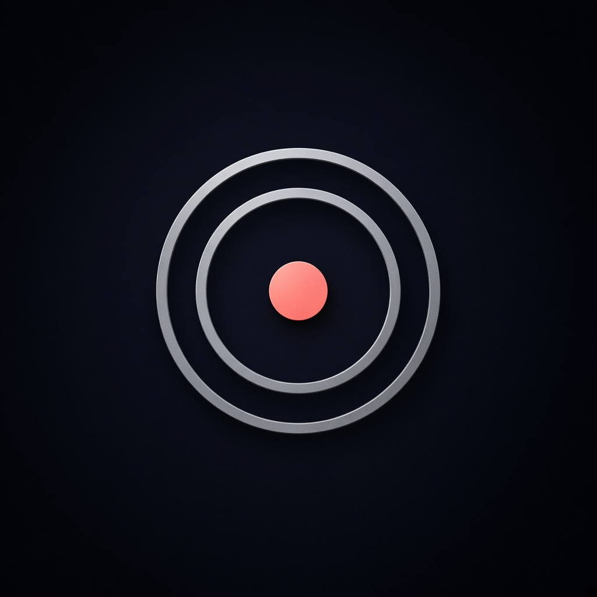
01 / VALIDATE
切面辨識 · 評估一致性
驗證規劃02 / INTEGRATE
報告品質 · 使用體驗
依審查條件推進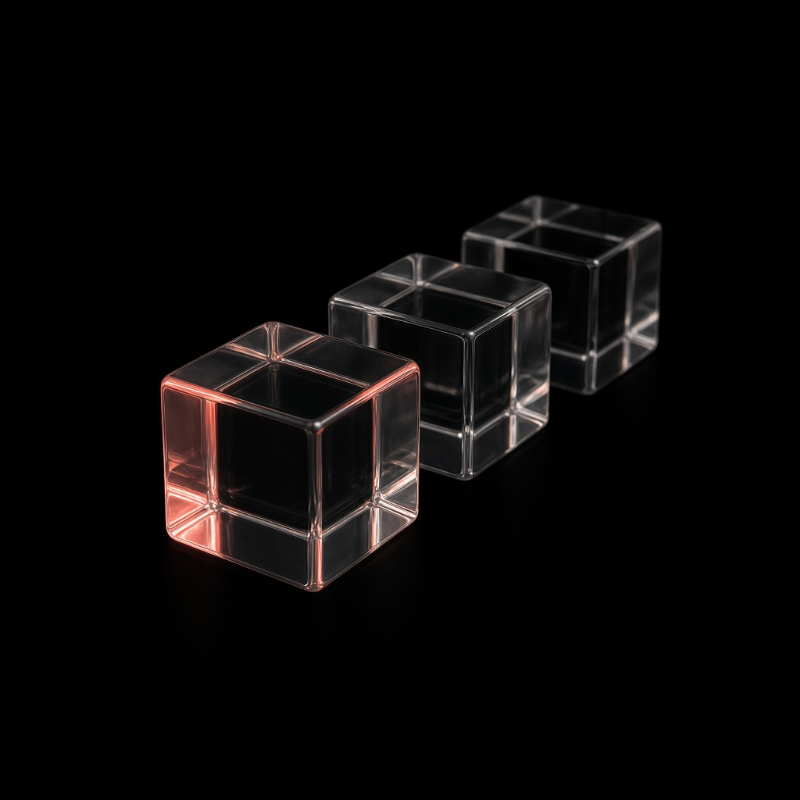
03 / EXPAND
設備相容 · 場域適配
後續方向以上為規劃路徑，非已完成成果；須依必要審查推進。
OUR CORE TEAM
BRAND RESOURCES
向量 SVG · 透明 PNG
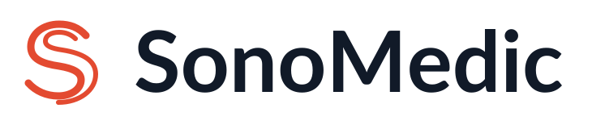
標準版 / 淺色背景請保留原始比例與留白。不得以品牌識別暗示醫療認證或機構背書。
下載完整 Logo 包COMMON QUESTIONS
本網站介紹研究開發中的專案，不代表已取得醫療器材許可或可供常規診斷使用。任何臨床研究均須遵循適用審查、研究計畫與院內規範。
不會。預期流程保留醫師審閱、修正與最終確認，系統輸出屬於輔助資訊，不是獨立的臨床決策。
沿用既有設備是開發方向，並非保證支援所有機型。設備介面、資料格式、資安與系統整合方式，需依各場域條件評估。